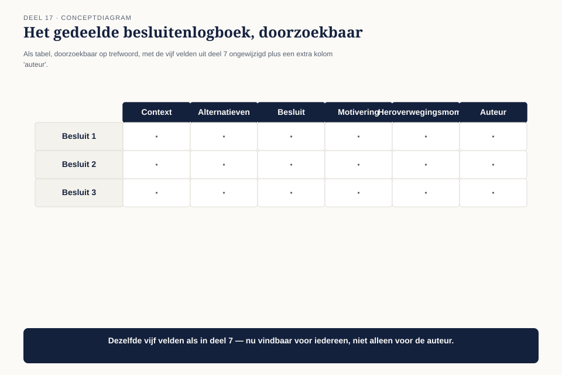
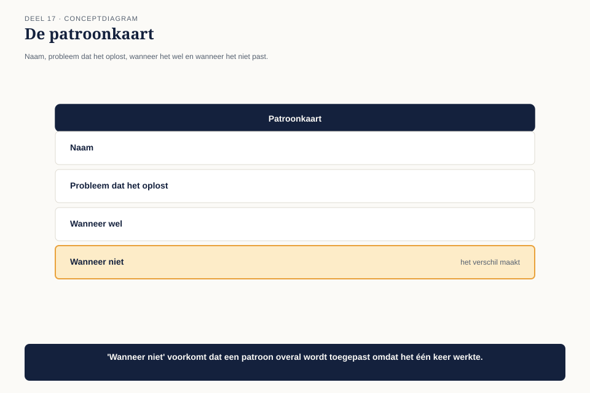
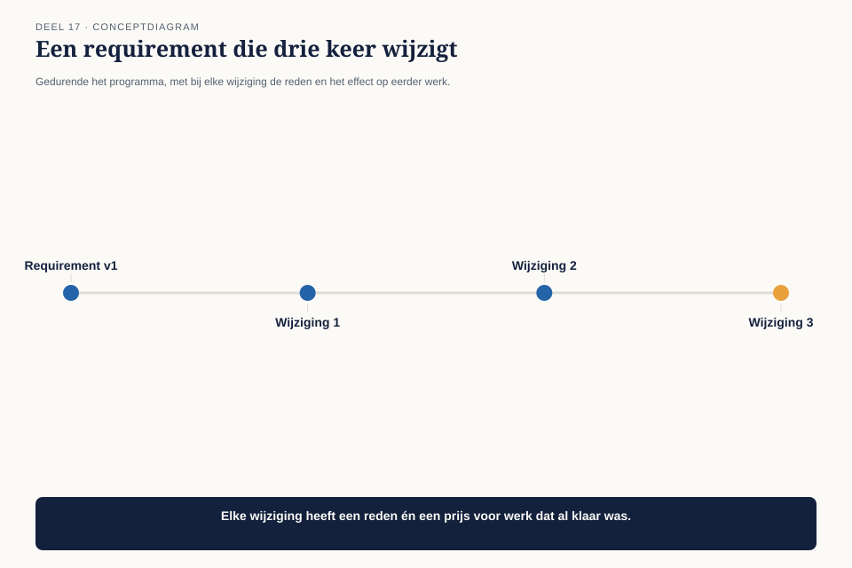
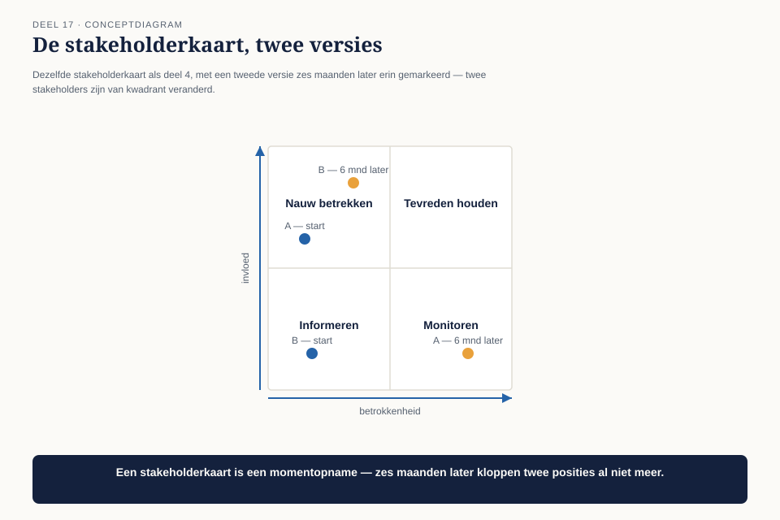

Deel 17 — Operating model I
Slidedeck · Ductus-cursus BTABoK · Niveau 2 · deel 17 van 30 · 24 slides
Slide 1 — Titel: Operating model I
Deel 17
Ductus
Slide 2 — Agenda: Vandaag
- Drie architecten, drie logboeken
- Besluiten: één gedeeld logboek
- Patronen
- Requirements in uitvoering
- Stakeholders in uitvoering
Slide 3 — Sectie: 1. Drie architecten, drie logboeken
Slide 4 — Figuur: Twee bijna identieke patronen

Slide 5 — Statement: Geen falen van het idee
Wat gebeurt er als één-persoons-gereedschap meerdere gebruikers krijgt
Slide 6 — Sectie: 2. Eén gedeeld logboek
Slide 7 — Figuur: Van drie bestanden naar één register

Slide 8 — Statement: Zoek eerst. Beslis dan.
Geen goedkeuringsproces — twee minuten zoeken
Slide 9 — Sectie: 3. Patronen
Slide 10 — Figuur: De patroonkaart

Slide 11 — Statement: "Wanneer het niet past"
Zonder dat veld wordt een patroon een dogma
Slide 12 — Opdracht: Opdracht 1 — Een patroonkaart schrijven
20 minuten, individueel
Een oplossing die je meer dan één keer hebt toegepast
Slide 13 — Opdracht: Opdracht 2 — Zoek eerst, beslis dan
15 minuten, tweetallen
Een eigen voorbeeld van onafhankelijk hetzelfde opgelost
Slide 14 — Sectie: 4. Requirements in uitvoering
Slide 15 — Figuur: Een requirement die drie keer wijzigt

Slide 16 — Tabel: Drie vragen bij elke wijziging
| # | Vraag |
|---|---|
| 1 | Wat is er veranderd, en waarom? |
| 2 | Welk eerder werk is geraakt? |
| 3 | Wijziging, of een nieuwe requirement naast de oude? |
Slide 17 — Statement: Vraag 3 is de subtielste
Bepaalt of je aanpast, of opnieuw begint
Slide 18 — Opdracht: Opdracht 3 — Wijziging of nieuwe requirement
15 minuten, individueel
Vier situaties
Slide 19 — Sectie: 5. Stakeholders in uitvoering
Slide 20 — Figuur: De kaart veroudert

Slide 21 — Bullets: Een levend document
- Niet alleen bij de start
- Vast hercontrolemoment — gekoppeld aan de kwartaalcyclus
- Zelfde moment als de klantreiskaart uit deel 12
Slide 22 — Opdracht: Opdracht 4 — De stakeholderkaart hercontroleren
15 minuten, individueel
Eigen kaart · wie is van kwadrant veranderd?
Slide 23 — Bullets: Terug naar het dubbele patroon
- Samengevoegd tot één patroonkaart
- Niet overbodig werk — bevestiging dat het patroon robuust is
- De verschillen leveren input voor een betere, gecombineerde kaart
Slide 24 — Titel: Volgende keer
Deel 18 — Operating model II
Views, kwaliteitsborging, deliverables en repository.